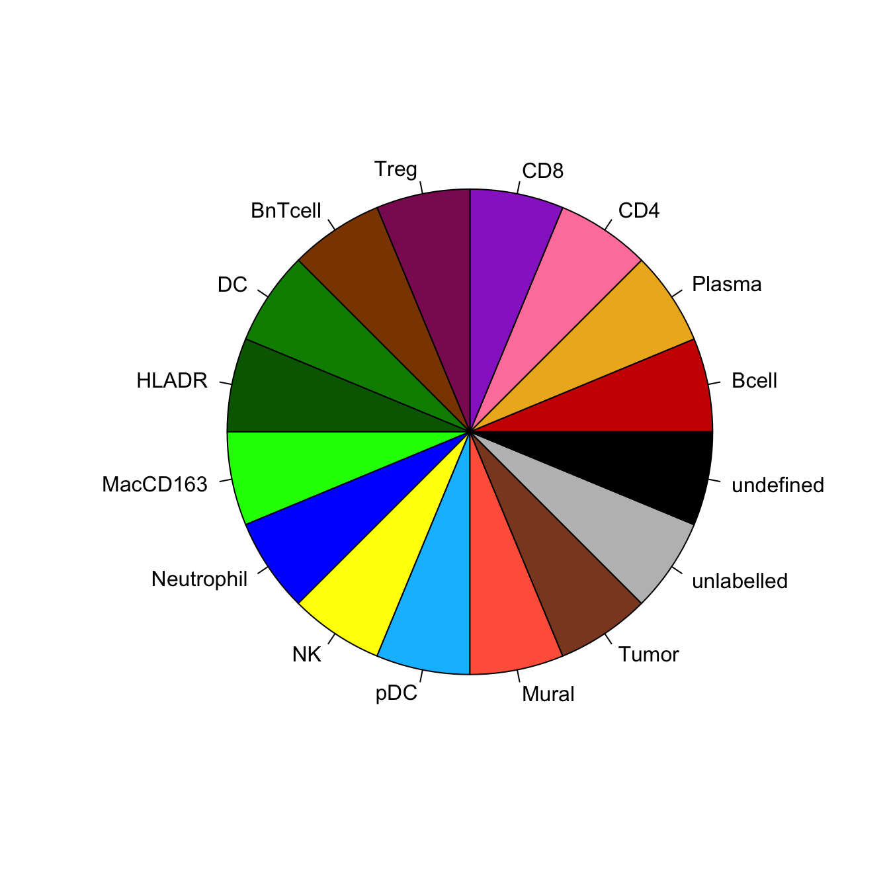
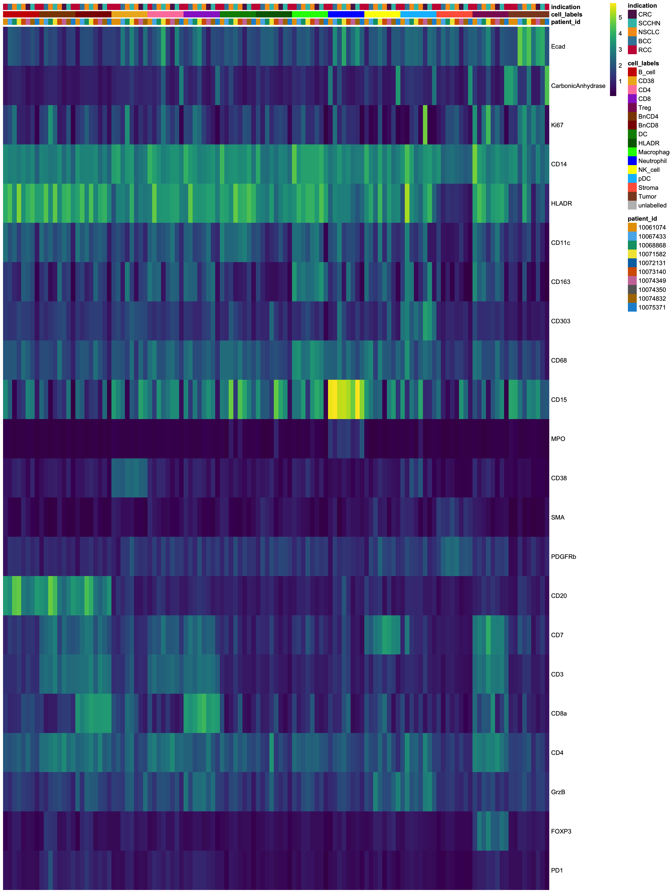
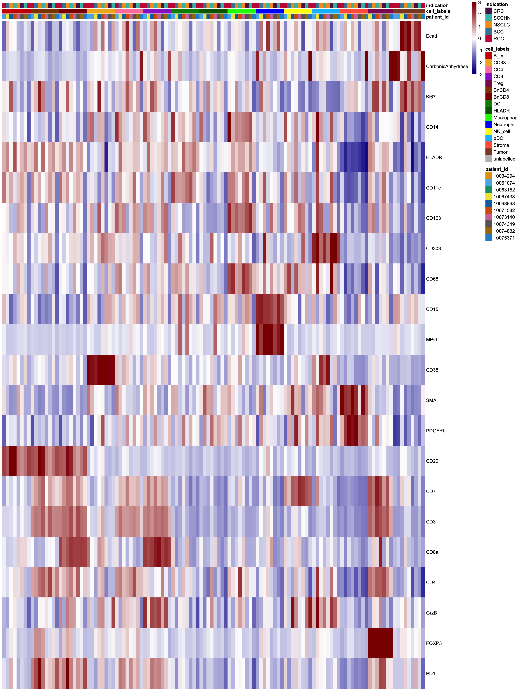
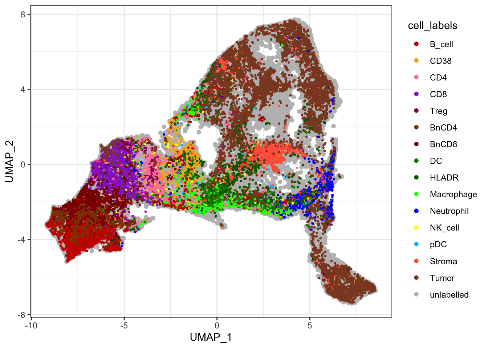

Last updated: 2022-05-05
Checks: 7 0
Knit directory: Analysis/
This reproducible R Markdown analysis was created with workflowr (version 1.7.0). The Checks tab describes the reproducibility checks that were applied when the results were created. The Past versions tab lists the development history.
Great! Since the R Markdown file has been committed to the Git repository, you know the exact version of the code that produced these results.
Great job! The global environment was empty. Objects defined in the global environment can affect the analysis in your R Markdown file in unknown ways. For reproduciblity it’s best to always run the code in an empty environment.
The command set.seed(20220321) was run prior to running
the code in the R Markdown file. Setting a seed ensures that any results
that rely on randomness, e.g. subsampling or permutations, are
reproducible.
Great job! Recording the operating system, R version, and package versions is critical for reproducibility.
Nice! There were no cached chunks for this analysis, so you can be confident that you successfully produced the results during this run.
Great job! Using relative paths to the files within your workflowr project makes it easier to run your code on other machines.
Great! You are using Git for version control. Tracking code development and connecting the code version to the results is critical for reproducibility.
The results in this page were generated with repository version 9fbdaac. See the Past versions tab to see a history of the changes made to the R Markdown and HTML files.
Note that you need to be careful to ensure that all relevant files for
the analysis have been committed to Git prior to generating the results
(you can use wflow_publish or
wflow_git_commit). workflowr only checks the R Markdown
file, but you know if there are other scripts or data files that it
depends on. Below is the status of the Git repository when the results
were generated:
Ignored files:
Ignored: .DS_Store
Ignored: IMC/.DS_Store
Ignored: IMC/Analysis/.DS_Store
Ignored: IMC/Analysis/.Rproj.user/
Ignored: IMC/Analysis/analysis/.DS_Store
Ignored: comparisons/.DS_Store
Ignored: comparisons/.Rproj.user/
Ignored: comparisons/analysis/.DS_Store
Ignored: mIF/.DS_Store
Ignored: mIF/Analysis/.Rproj.user/
Ignored: mIF/Analysis/analysis/.DS_Store
Unstaged changes:
Modified: IMC/Analysis/analysis/01_read_data.Rmd
Modified: IMC/Analysis/analysis/02_spillover_correction.Rmd
Modified: IMC/Analysis/analysis/03_quality_control.Rmd
Modified: IMC/Analysis/analysis/07_predict_celltypes.Rmd
Note that any generated files, e.g. HTML, png, CSS, etc., are not included in this status report because it is ok for generated content to have uncommitted changes.
These are the previous versions of the repository in which changes were
made to the R Markdown
(IMC/Analysis/analysis/05_labelling.Rmd) and HTML
(IMC/Analysis/docs/05_labelling.html) files. If you’ve
configured a remote Git repository (see ?wflow_git_remote),
click on the hyperlinks in the table below to view the files as they
were in that past version.
| File | Version | Author | Date | Message |
|---|---|---|---|---|
| Rmd | c22d4e1 | nilseling | 2022-04-29 | Added more projects |
Here, we will manually label cells based on their cell type. This is done based on the labelling scheme in …
First, we will load the previously generated
SingleCellExperiment and CytoImageList
objects.
library(cytomapper)
library(stringr)
sce <- readRDS("/Volumes/immucan_volume/processed_data/Panel_1/2022_WORKFLOW/IMC/Rout/sce.rds")
images <- readRDS("/Volumes/immucan_volume/processed_data/Panel_1/2022_WORKFLOW/IMC/Rout/images.rds")
masks <- readRDS("/Volumes/immucan_volume/processed_data/Panel_1/2022_WORKFLOW/IMC/Rout/masks.rds")
# Here we exclude sample 10072131 and 10074350 as they will be replaced
images <- images[!grepl("10072131|10074350", names(images))]
masks <- masks[!grepl("10072131|10074350", names(masks))]
sce <- sce[,!grepl("10072131|10074350", sce$sample_id)]We will now label cells on images and save them.
images <- CytoImageList(images, on_disk = FALSE)
masks <- CytoImageList(masks, on_disk = FALSE)
# Change display name
sce$ID <- paste0(sce$indication, "_", sce$patient_id, "_", sce$ROI)
cur_df <- colData(sce)[,c("sample_id", "ID")]
cur_mcols <- mcols(images)
cur_mcols <- merge(cur_mcols, cur_df, by = "sample_id", sort = FALSE)
cur_mcols <- unique(cur_mcols)
all.equal(cur_mcols$sample_id, mcols(images)$sample_id)[1] TRUEmcols(images) <- mcols(masks) <- cur_mcols
if (interactive()) {
cytomapperShiny(object = sce, mask = masks, image = images,
cell_id = "ObjectNumber", img_id = "ID")
}We next check for labelling quality.
library(SingleCellExperiment)
label.files <- list.files("/Volumes/immucan_volume/processed_data/Panel_1/2022_WORKFLOW/IMC/Rout/gated_cells/",
full.names = TRUE, pattern = ".rds$")
# Read in SCE objects
cur_sces <- lapply(label.files, readRDS)
# Merge SCE objects
cur_sce <- do.call("cbind", cur_sces)
# now we check if the celltypes were labelled uniquely
names <- unique(cur_sce$cytomapper_CellLabel)
unique(names) [1] "B_cell" "BnCD4" "BnCD8" "CD38" "CD4"
[6] "CD8" "DC" "HLADR" "Macrophage" "Neutrophil"
[11] "NK_cell" "pDC" "Stroma" "Treg" "Tumor" table(cur_sce$cytomapper_CellLabel, cur_sce$indication)
BCC CRC NSCLC RCC SCCHN
B_cell 277 50 495 892 852
BnCD4 354 116 505 532 755
BnCD8 171 272 258 233 626
CD38 55 268 705 447 572
CD4 67 418 155 264 477
CD8 84 146 1369 536 144
DC 39 117 347 187 231
HLADR 102 162 583 735 337
Macrophage 134 309 422 359 321
Neutrophil 47 83 610 376 322
NK_cell 45 23 32 108 110
pDC 2 27 322 53 51
Stroma 210 120 205 554 469
Treg 31 21 90 18 157
Tumor 1113 1097 2723 3682 2125We next need to remove cells that were assigned to different cell types. For these cell, the classification uncertainty will be highest.
cur_vec <- cur_sce$cytomapper_CellLabel
cur_tab <- unclass(table(colnames(cur_sce), cur_sce$cytomapper_CellLabel))
cur_labels <- rep("doublets", nrow(cur_tab))
# Single assignments
cur_labels[rowSums(cur_tab) == 1] <- colnames(cur_tab)[apply(cur_tab[rowSums(cur_tab) == 1,], 1, which.max)]
table(cur_labels)cur_labels
B_cell BnCD4 BnCD8 CD38 CD4 CD8 DC
2488 2237 1543 1606 1163 1972 748
doublets HLADR Macrophage Neutrophil NK_cell pDC Stroma
1877 1306 1277 1170 232 366 1509
Treg Tumor
215 9657 # Remove doublets
names(cur_labels) <- rownames(cur_tab)
cur_labels <- cur_labels[cur_labels != "doublets"]
table(cur_labels)cur_labels
B_cell BnCD4 BnCD8 CD38 CD4 CD8 DC
2488 2237 1543 1606 1163 1972 748
HLADR Macrophage Neutrophil NK_cell pDC Stroma Treg
1306 1277 1170 232 366 1509 215
Tumor
9657 # Store in SingleCellExperiment
sce_labels <- rep("unlabelled", ncol(sce))
names(sce_labels) <- colnames(sce)
sce_labels[names(cur_labels)] <- cur_labels
sce$cell_labels <- sce_labels
table(sce$cell_labels, sce$indication)
BCC CRC NSCLC RCC SCCHN
B_cell 264 50 492 833 849
BnCD4 342 116 505 524 750
BnCD8 167 272 255 225 624
CD38 54 268 612 324 348
CD4 65 386 131 229 352
CD8 74 128 1224 429 117
DC 38 108 307 110 185
HLADR 101 137 488 337 243
Macrophage 131 277 384 247 238
Neutrophil 17 83 504 374 192
NK_cell 44 7 16 69 96
pDC 2 1 322 30 11
Stroma 210 90 203 537 469
Treg 30 21 84 16 64
Tumor 1100 1053 2356 3023 2125
unlabelled 5484 7223 18213 12185 13021In this step, we will define a colour vector for all further visualization purposes.
cell_types <- c("B_cell", "CD38", "CD4", "CD8", "Treg", "BnCD4", "BnCD8",
"DC", "HLADR", "Macrophage", "Neutrophil", "NK_cell", "pDC", "Stroma",
"Tumor", "unlabelled")
names(cell_types) <- cell_types
cell_types["B_cell"] <- "red3"
cell_types["CD38"] <- "goldenrod2"
cell_types["CD4"] <- "palevioletred1"
cell_types["CD8"] <- "darkorchid"
cell_types["Treg"] <- "maroon4"
cell_types["BnCD4"] <- "darkorange4"
cell_types["BnCD8"] <- "red4"
cell_types["DC"] <- "green4"
cell_types["HLADR"] <- "darkgreen"
cell_types["Macrophage"] <- "green"
cell_types["Neutrophil"] <- "blue1"
cell_types["NK_cell"] <- "yellow"
cell_types["pDC"] <- "deepskyblue"
cell_types["Stroma"] <- "tomato"
cell_types["Tumor"] <- "sienna4"
cell_types["unlabelled"] <- "gray"
metadata(sce)$colour_vectors$cell_types <- cell_types
pie(c(rep(1,length(metadata(sce)$colour_vectors$cell_types))),
col = metadata(sce)$colour_vectors$cell_types,
labels = names(metadata(sce)$colour_vectors$cell_types))
Here, we will check a number of statistics to assess labelling quality.
library(dplyr)
Attaching package: 'dplyr'The following object is masked from 'package:Biobase':
combineThe following objects are masked from 'package:GenomicRanges':
intersect, setdiff, unionThe following object is masked from 'package:GenomeInfoDb':
intersectThe following objects are masked from 'package:IRanges':
collapse, desc, intersect, setdiff, slice, unionThe following objects are masked from 'package:S4Vectors':
first, intersect, rename, setdiff, setequal, unionThe following objects are masked from 'package:BiocGenerics':
combine, intersect, setdiff, unionThe following object is masked from 'package:matrixStats':
countThe following object is masked from 'package:EBImage':
combineThe following objects are masked from 'package:stats':
filter, lagThe following objects are masked from 'package:base':
intersect, setdiff, setequal, union# 1. How many cells of how many images are labelled
# Percent cells labelled
as_tibble(colData(sce)) %>%
summarise(labelled_cells = sum(cell_labels != "unlabelled")/n()) # A tibble: 1 × 1
labelled_cells
<dbl>
1 0.329# Percent images labelled
as_tibble(colData(sce)) %>%
group_by(sample_id) %>%
summarise(labelled_cells = sum(cell_labels != "unlabelled")) %>%
ungroup() %>%
summarise(labelled_images = sum(labelled_cells != 0)/n())# A tibble: 1 × 1
labelled_images
<dbl>
1 0.968# Percent patients labelled
as_tibble(colData(sce)) %>%
group_by(patient_id) %>%
summarise(labelled_cells = sum(cell_labels != "unlabelled")) %>%
ungroup() %>%
summarise(labelled_samples = sum(labelled_cells != 0)/n())# A tibble: 1 × 1
labelled_samples
<dbl>
1 1# Percent of cells labelled per image
as_tibble(colData(sce)) %>%
group_by(sample_id) %>%
summarise(labelled_cells = sum(cell_labels != "unlabelled")/n(),
number_cells = n()) %>%
as.data.frame() sample_id labelled_cells
1 IMMUcan_2022_WFLOW_10061074-SPECT-VAR-TIS-01-IMC-01_001 0.710632990
2 IMMUcan_2022_WFLOW_10061074-SPECT-VAR-TIS-01-IMC-01_002 0.433178464
3 IMMUcan_2022_WFLOW_10061074-SPECT-VAR-TIS-01-IMC-01_003 0.280059193
4 IMMUcan_2022_WFLOW_10061074-SPECT-VAR-TIS-01-IMC-01_004 0.124396584
5 IMMUcan_2022_WFLOW_10067433-SPECT-VAR-TIS-01-IMC-01_001 0.639014580
6 IMMUcan_2022_WFLOW_10067433-SPECT-VAR-TIS-01-IMC-01_002 0.119863014
7 IMMUcan_2022_WFLOW_10067433-SPECT-VAR-TIS-01-IMC-01_003 0.054565702
8 IMMUcan_2022_WFLOW_10067433-SPECT-VAR-TIS-01-IMC-01_004 0.409899459
9 IMMUcan_2022_WFLOW_10068868-SPECT-VAR-TIS-01-IMC-01_005 0.763002180
10 IMMUcan_2022_WFLOW_10068868-SPECT-VAR-TIS-01-IMC-01_006 0.437348143
11 IMMUcan_2022_WFLOW_10068868-SPECT-VAR-TIS-01-IMC-01_007 0.106520517
12 IMMUcan_2022_WFLOW_10068868-SPECT-VAR-TIS-01-IMC-01_008 0.266721718
13 IMMUcan_2022_WFLOW_10071582-SPECT-VAR-TIS-01-IMC-01_005 0.229921819
14 IMMUcan_2022_WFLOW_10071582-SPECT-VAR-TIS-01-IMC-01_006 0.139780577
15 IMMUcan_2022_WFLOW_10071582-SPECT-VAR-TIS-01-IMC-01_007 0.382171645
16 IMMUcan_2022_WFLOW_10071582-SPECT-VAR-TIS-01-IMC-01_008 0.377203874
17 IMMUcan_2022_WFLOW_10073140-SPECT-VAR-TIS-01-IMC-01_001 0.759333333
18 IMMUcan_2022_WFLOW_10073140-SPECT-VAR-TIS-01-IMC-01_002 0.103284672
19 IMMUcan_2022_WFLOW_10073140-SPECT-VAR-TIS-01-IMC-01_003 0.086135896
20 IMMUcan_2022_WFLOW_10073140-SPECT-VAR-TIS-01-IMC-01_004 0.003125751
21 IMMUcan_2022_WFLOW_10074349-SPECT-VAR-TIS-UNST-03_001 0.865542924
22 IMMUcan_2022_WFLOW_10074349-SPECT-VAR-TIS-UNST-03_002 0.040826365
23 IMMUcan_2022_WFLOW_10074349-SPECT-VAR-TIS-UNST-03_003 0.118426867
24 IMMUcan_2022_WFLOW_10074349-SPECT-VAR-TIS-UNST-03_004 0.129854729
25 IMMUcan_2022_WFLOW_10074832-SPECT-VAR-TIS-01-IMC-01_001 0.350345561
26 IMMUcan_2022_WFLOW_10074832-SPECT-VAR-TIS-01-IMC-01_002 0.140919367
27 IMMUcan_2022_WFLOW_10074832-SPECT-VAR-TIS-01-IMC-01_003 0.731152993
28 IMMUcan_2022_WFLOW_10074832-SPECT-VAR-TIS-01-IMC-01_004 0.362465501
29 IMMUcan_2022_WFLOW_10075371-SPECT-VAR-TIS-01-IMC-01_001 0.319139399
30 IMMUcan_2022_WFLOW_10075371-SPECT-VAR-TIS-01-IMC-01_002 0.000000000
31 IMMUcan_2022_WFLOW_10075371-SPECT-VAR-TIS-01-IMC-01_003 0.648338608
number_cells
1 3207
2 3659
3 2703
4 2693
5 1989
6 1752
7 1796
8 2586
9 3211
10 2881
11 3558
12 3633
13 2814
14 2461
15 2109
16 4027
17 3000
18 2740
19 2914
20 4159
21 2551
22 2033
23 2263
24 3373
25 1881
26 1327
27 1804
28 3261
29 2231
30 2471
31 2528We will check how balanced the classes are across the images.
# Total cells per class
as_tibble(colData(sce)) %>%
group_by(cell_labels) %>%
summarise(number_cells = n()) %>%
as.data.frame() cell_labels number_cells
1 B_cell 2488
2 BnCD4 2237
3 BnCD8 1543
4 CD38 1606
5 CD4 1163
6 CD8 1972
7 DC 748
8 HLADR 1306
9 Macrophage 1277
10 Neutrophil 1170
11 NK_cell 232
12 pDC 366
13 Stroma 1509
14 Treg 215
15 Tumor 9657
16 unlabelled 56126# Total cells per class and image
as_tibble(colData(sce)) %>%
filter(cell_labels != "unlabelled") %>%
group_by(cell_labels, sample_id) %>%
summarise(number_cells = n()) %>%
DT::datatable()`summarise()` has grouped output by 'cell_labels'. You can override using the
`.groups` argument.Now, we will check the expression of selected markers across the classes and visualize cell labels on tSNE.
library(scran)Loading required package: scuttlelibrary(dittoSeq)Loading required package: ggplot2library(viridis)Loading required package: viridisLitelab_sce <- sce[,sce$cell_labels != "unlabelled"]
agr_sce <- aggregateAcrossCells(lab_sce,
ids = colData(lab_sce)[,c("sample_id", "cell_labels")],
statistics = "mean")
assay(agr_sce, "exprs") <- asinh(counts(agr_sce))
colnames(agr_sce) <- paste0(agr_sce$sample_id, "_",
agr_sce$cell_labels)
# Define markers that were used for gating
cur_markers <- c("Ecad", "CarbonicAnhydrase", "Ki67", "CD14", "HLADR",
"CD11c", "CD163", "CD303", "CD68", "CD15", "MPO", "CD38",
"SMA", "PDGFRb", "CD20", "CD7", "CD3", "CD8a", "CD4", "GrzB", "FOXP3", "PD1")
# Non-scaled
dittoHeatmap(agr_sce[cur_markers,], assay = "exprs",
annot.by = c("patient_id", "cell_labels", "indication"),
cluster_rows = FALSE,
scale = "none", heatmap.colors = viridis(100), order.by = "cell_labels",
annotation_colors = list(patient_id = metadata(sce)$colour_vectors$PatientIds,
cell_labels = metadata(sce)$colour_vectors$cell_types,
indication = metadata(sce)$colour_vectors$Indication))
# Centered and scaled
dittoHeatmap(agr_sce[cur_markers,], assay = "exprs",
annot.by = c("patient_id", "cell_labels", "indication"),
cluster_rows = FALSE, order.by = "cell_labels",
annotation_colors = list(patient_id = metadata(sce)$colour_vectors$PatientIds,
cell_labels = metadata(sce)$colour_vectors$cell_types,
indication = metadata(sce)$colour_vectors$Indication),
heatmap.colors = colorRampPalette(c("dark blue", "white", "dark red"))(100),
breaks = seq(-3, 3, length.out = 101))
Finally, we will represent the gated cells on tSNE.
cur_unlab_sce <- sce[,sce$cell_labels == "unlabelled"]
cur_lab_sce <- sce[,sce$cell_labels != "unlabelled"]
ggplot() +
geom_point(aes(x = UMAP_1, y = UMAP_2, colour = cell_labels),
data = data.frame(UMAP_1 = reducedDim(cur_unlab_sce, "UMAP_fastMNN")[,1],
UMAP_2 = reducedDim(cur_unlab_sce, "UMAP_fastMNN")[,2],
cell_labels = colData(cur_unlab_sce)$cell_labels)) +
geom_point(aes(x = UMAP_1, y = UMAP_2, colour = cell_labels), size = 0.5,
data = data.frame(UMAP_1 = reducedDim(cur_lab_sce, "UMAP_fastMNN")[,1],
UMAP_2 = reducedDim(cur_lab_sce, "UMAP_fastMNN")[,2],
cell_labels = colData(cur_lab_sce)$cell_labels)) +
scale_color_manual(values = metadata(sce)$colour_vectors$cell_types) +
theme_bw()
saveRDS(sce, "/Volumes/immucan_volume/processed_data/Panel_1/2022_WORKFLOW/IMC/Rout/sce.rds")
sessionInfo()R version 4.1.3 (2022-03-10)
Platform: x86_64-apple-darwin17.0 (64-bit)
Running under: macOS Catalina 10.15.7
Matrix products: default
BLAS: /Library/Frameworks/R.framework/Versions/4.1/Resources/lib/libRblas.0.dylib
LAPACK: /Library/Frameworks/R.framework/Versions/4.1/Resources/lib/libRlapack.dylib
locale:
[1] en_US.UTF-8/en_US.UTF-8/en_US.UTF-8/C/en_US.UTF-8/en_US.UTF-8
attached base packages:
[1] stats4 stats graphics grDevices utils datasets methods
[8] base
other attached packages:
[1] viridis_0.6.2 viridisLite_0.4.0
[3] dittoSeq_1.7.0 ggplot2_3.3.5
[5] scran_1.22.1 scuttle_1.4.0
[7] dplyr_1.0.9 stringr_1.4.0
[9] cytomapper_1.7.1 SingleCellExperiment_1.16.0
[11] SummarizedExperiment_1.24.0 Biobase_2.54.0
[13] GenomicRanges_1.46.1 GenomeInfoDb_1.30.1
[15] IRanges_2.28.0 S4Vectors_0.32.4
[17] BiocGenerics_0.40.0 MatrixGenerics_1.6.0
[19] matrixStats_0.62.0 EBImage_4.36.0
[21] workflowr_1.7.0
loaded via a namespace (and not attached):
[1] systemfonts_1.0.4 plyr_1.8.7
[3] igraph_1.3.1 sp_1.4-7
[5] shinydashboard_0.7.2 BiocParallel_1.28.3
[7] crosstalk_1.2.0 digest_0.6.29
[9] htmltools_0.5.2 tiff_0.1-11
[11] fansi_1.0.3 magrittr_2.0.3
[13] ScaledMatrix_1.2.0 cluster_2.1.2
[15] limma_3.50.3 svgPanZoom_0.3.4
[17] svglite_2.1.0 jpeg_0.1-9
[19] colorspace_2.0-3 ggrepel_0.9.1
[21] xfun_0.30 callr_3.7.0
[23] crayon_1.5.1 RCurl_1.98-1.6
[25] jsonlite_1.8.0 glue_1.6.2
[27] gtable_0.3.0 nnls_1.4
[29] zlibbioc_1.40.0 XVector_0.34.0
[31] DelayedArray_0.20.0 BiocSingular_1.10.0
[33] Rhdf5lib_1.16.0 HDF5Array_1.22.1
[35] abind_1.4-5 scales_1.2.0
[37] pheatmap_1.0.12 DBI_1.1.2
[39] edgeR_3.36.0 Rcpp_1.0.8.3
[41] xtable_1.8-4 dqrng_0.3.0
[43] rsvd_1.0.5 DT_0.22
[45] metapod_1.2.0 htmlwidgets_1.5.4
[47] httr_1.4.2 RColorBrewer_1.1-3
[49] ellipsis_0.3.2 farver_2.1.0
[51] pkgconfig_2.0.3 sass_0.4.1
[53] locfit_1.5-9.5 utf8_1.2.2
[55] labeling_0.4.2 tidyselect_1.1.2
[57] rlang_1.0.2 later_1.3.0
[59] munsell_0.5.0 tools_4.1.3
[61] cli_3.3.0 generics_0.1.2
[63] ggridges_0.5.3 evaluate_0.15
[65] fastmap_1.1.0 fftwtools_0.9-11
[67] yaml_2.3.5 processx_3.5.3
[69] knitr_1.39 fs_1.5.2
[71] purrr_0.3.4 sparseMatrixStats_1.6.0
[73] whisker_0.4 mime_0.12
[75] compiler_4.1.3 rstudioapi_0.13
[77] beeswarm_0.4.0 png_0.1-7
[79] tibble_3.1.6 statmod_1.4.36
[81] bslib_0.3.1 stringi_1.7.6
[83] highr_0.9 ps_1.7.0
[85] lattice_0.20-45 bluster_1.4.0
[87] Matrix_1.4-1 vctrs_0.4.1
[89] pillar_1.7.0 lifecycle_1.0.1
[91] rhdf5filters_1.6.0 jquerylib_0.1.4
[93] BiocNeighbors_1.12.0 cowplot_1.1.1
[95] bitops_1.0-7 irlba_2.3.5
[97] raster_3.5-15 httpuv_1.6.5
[99] R6_2.5.1 promises_1.2.0.1
[101] gridExtra_2.3 vipor_0.4.5
[103] codetools_0.2-18 assertthat_0.2.1
[105] rhdf5_2.38.1 rprojroot_2.0.3
[107] withr_2.5.0 GenomeInfoDbData_1.2.7
[109] parallel_4.1.3 terra_1.5-21
[111] grid_4.1.3 beachmat_2.10.0
[113] rmarkdown_2.14 DelayedMatrixStats_1.16.0
[115] git2r_0.30.1 getPass_0.2-2
[117] shiny_1.7.1 ggbeeswarm_0.6.0